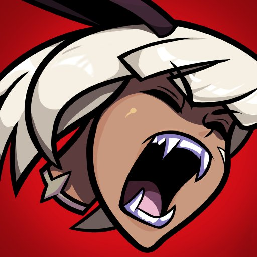

|
Descripcion |
Desarrollador/Distribuidor |
Genero |
Plataforma |
Fecha de lanzamiento |
One Piece Treasure Cruise |
ONE PIECE TREASURE CRUISE es una aventura emocionante con tu equipo favorito de Anime. Forma tu propia tripulación pirata inadaptada, saca combos de potencia y revive tus momentos favoritos de la historia de One Piece. ¡El mundo de One Piece te espera! |
Bandai Namco Entertainment |
RPG, Accion, Anime |
Android, IOS |
12 de mayo de 2014(Japon), 8 de Febrero de 2015(Global) |
Dragon Ball Legends |
Dragon Ball Legends es un videojuego de lucha basado en la franquicia Dragon Ball, consigue personajes y enfrentate a otros jugadores de todo el mundo en tiempo real |
Bandai Namco Entertainment, Dimps |
Lucha, Accion, Anime |
Android, IOS |
17 de mayo de 2018 |
BLEACH Brave Souls |
BLEACH: Brave Souls es el primer juego de acción para móviles basados en el mega-hit manga Bleach. Forma tu propio equipo de 3 integrantes, revive la historia de bleach y pelea contra otros jugadores. |
KLab, KLab Global Pte. Ltd. |
RPG, Accion, Anime |
Android, IOS |
23 de julio de 2015(Japon) 13 de enero de 2016(Global) |
Grand Summoners |
¡Grand Summoners es el impresionante juego de rol de píxeles con batallas hiper intuitivas que has estado esperando para jugar! ¡Devasta el reino de Raktehelm! Ha llegado el momento, una vez más, de héroes legendarios para enfrentarse a la amenaza nefasta y restaurar la justicia. |
Good Smile Company, GOOD SMILE COMPANY, Inc |
RPG, Accion, Aventura |
Android, IOS |
9 de marzo de 2016(Japon) 7 de febrero de 2018(Global) |
Naruto x Boruto Ninja Voltage |
En Naruto X Boruto Ninja Voltage veremos tanto personajes de Naruto Shippuden como de Boruto, la nueva saga protagonizada por la siguiente generación de ninjas de la Aldea oculta de la hoja. Defiende tu aldea y compite online contra otros Hokage. |
Bandai Namco Entertainment |
RPG, Accion, Anime |
Android, IOS |
15 de noviembre de 2017(Japon) 22 de noviembre de 2017(Global) |
Dragon Ball Z Dokkan Battle |
Dragon Ball Z: Dokkan Battle es un juego de acción con toques de estrategia en el que los jugadores podrán controlar a algunos de los personajes más míticos del universo de Dragon Ball, con los que podrán protagonizar una historia completamente nueva, pensada en exclusiva para este título. |
Bandai Namco Entertainment |
RPG, Lucha, Accion, Anime |
Android, IOS |
30 de enero de 2015(Japon) 16 de julio de 2015(Global) |
 Pokemon Masters |
En Pokémon Masters, Pokémon y Entrenadores se convierten en compis para alzarse con la victoria en esta aventura.¡En este juego se unen multitud de Entrenadores y Pokemon que han aparecido a lo largo de la saga para formar parejas de compis! |
DeNA |
RPG, Lucha, Estrategias |
Android, IOS |
28 de agosto de 2019 |
Mario Kart Tour |
¡La famosa serie Mario Kart llega al mundo de los dispositivos inteligentes! Con tan solo un dedo puedes pilotear tu vehículo y derrapar con facilidad. ¡Arroja objetos devastadores para llevarte la victoria en copas que incluyen pistas nuevas y clásicas de Mario Kart! |
Nintendo, DeNA |
Carreras, Online, Multijugador |
Android, IOS |
25 de septiembre de 2019 |
Konosuba: Wonderful Days |
Konosuba: Wonderful Days es un RPG movil que se origina de la seria Konosuba. Personajes famosos como Kazuma, Aqua, Megumin y Darkness podran ser reclutados por los jugadores para iniciar su propia aventura fantastica en este isekai. |
Sumzap inc. |
RPG, Anime, Aventura, Fantasia |
Android, IOS |
27 de febrero de 2019(Japon) |
|  Skullgirls Mobile |
¡Skullgirls es un RPG de lucha en 2D lleno de personajes únicos para coleccionar, mejorar y personalizar al tiempo que te embarcas en la búsqueda de la misteriosa SKULLGIRL! |
Hidden Variable, Lab Zero Games |
RPG, Accion, Lucha |
Android, IOS |
25 de mayo de 2017 |
Shinobi Master Senran Kagura: New Link |
Shinobi Master Senran Kagura: New Link es un juego móvil que presenta a todas tus chicas favoritas de Senran Kagura. |
Honey ∞ Parade Games, Marvelous Inc. |
RPG, Card Battle, Anime, Estrategias |
Android, IOS, PC |
29 de noviembre de 2017(Japon) |
Fate/Grand Order |
Fate/Grand Order es un JRPG con elementos de 'visual novel' enmarcado dentro de la popular franquicia iniciada por Fate/Stay Night. |
Delightworks, Sega, Sega-AM2 |
RPG, Accion, Fantasia |
Android, IOS |
30 de julio de 2015(Japon) 25 de junio de 2017(Global) |
Love Live! School Idol Festival ALL STARS |
Love Live! School Idol Festival ALL STARS (SIFAS) es un juego de ritmo que incluye un total de 27 ídolos de μ's, Aqours y Nijigasaki High School Idol Club. |
Klab |
RPG, Musica |
Android, IOS |
26 de septiembre de 2019(Japon) 25 de febrero de 2020(Global) |
The Seven Deadly Sins: Grand Cross |
The Seven Deadly Sins: Hikari To Yami Grand Cross es un juego de rol (RPG) basado en el exitoso anime llamado The Seven Deadly Sins. Un espectacular RPG que se mezcla con mecánicas propias de los juegos de cartas.El juego presenta personajes icónicos del anime y permite a los jugadores entrar de lleno en sus escenas favoritas. ¡Los fanáticos de la serie de anime definitivamente deberían probar este juego! |
Netmarble |
RPG, Accion, Anime |
Android, IOS |
4 de junio de 2020(Japon) 3 de Marzo de 2020(Global) |
Sword Art Online Alicization Rising Steel |
Sword Art Online Alicization Rising Steel es un juego de rol móvil que se originó en la serie Sword Art Online, que permite a los jugadores leer la historia de Alicization desde otra perspectiva. |
Bandai Namco Entertainment |
RPG, Accion, Fantasia, Anime |
Android, IOS |
20 de noviembre de 2019 |
Jump Hero Taisen Ore Collection 2 |
Jump Hero Taisen Ore Collection 2 es un videojuego de rol y RPG para teléfonos inteligentes que nos permite aliarnos con otros jugadores para disfrutar de batallas protagonizadas por algunos de los personajes más conocidos de la Shonen Jump. |
Bandai Namco Entertainment |
RPG, Rol, Anime |
Android, IOS |
25 de noviembre de 2019(japon) |
 Fire Emblem Heroes |
Fire Emblem Heroes es un juego de rol táctico para mobiles inteligentes basado en la serie Fire Emblem. Entabla batallas diseñadas para jugar en cualquier parte y adaptadas para pantallas táctiles. Invoca héroes de todo el universo de Fire Emblem, perfecciona sus habilidades y llévalos a la victoria. ¡Esta aventura no se parece a ninguna otra de Fire Emblem! |
Intelligent Systems, Nintendo Entertainment Planning & Development |
Rol, RPG, Fantasia, Estrategias |
Android, IOS |
2 de febrero de 2017 |
Sword Art Online Memory Defrag |
SWORD ART ONLINE: Memory Defrag es un juego RPG gratuito de móvil multi-jugador en el que los jugadores experimentan las historias del popular anime. |
Bandai Namco Entertainment |
RPG, Fantasia, Anime |
Android, IOS |
23 de enero de 2017 |
BanG Dream Girls Band Party |
BanG Dream! Girls Band Party! es un juego de ritmo basado en la popular franquicia BanG Dream! Es un juego emocionante con controles simples! Toca al ritmo de más de 60 canciones, incluidas canciones de juegos originales y versiones cubiertas de populares canciones de anime japonesas como "Silhouette", "Butter-Fly", "Guren no Yumiya" y "Soul's Refrain" |
Bushiroad, Craft Egg |
Musica, Aventura |
Android, IOS |
16 de marzo de 2017(Japon) 4 de abril de 2018(Global) |
One Piece Bounty Rush |
¡Toma el botín que pirateas! One Piece Bounty Rush es un juego de saqueo de tesoros en una arena de anime en 3D que se desarrolla en el popular mundo pirata de manga de One Piece. ¡Únete a Luffy, el famoso pirata del sombrero de paja y a todos tus personajes favoritos del universo One Piece en 4 contra 4 batallas de pvp en tiempo real para apresurar y saquear el tesoro de monedas de berries para la victoria! |
Bandai Namco Entertainment |
Multijugador, Accion, Anime |
Android, IOS |
29 de marzo de 2018(Japon) 28 de enero de 2019(Global) |